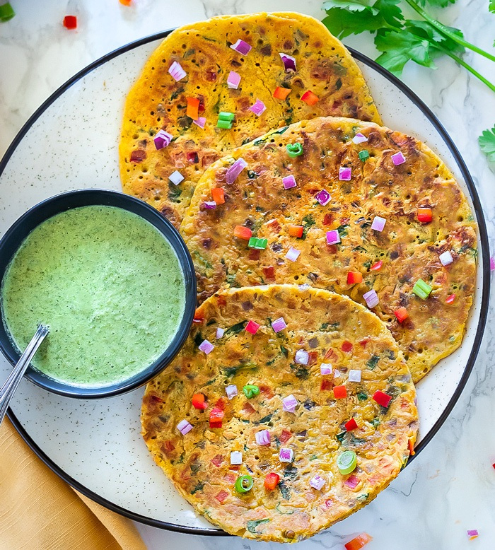

Besan Pooda / Cheela Recipe

Besam ka puda a.k.a besan ka chilla is a savory Indian crepe.
It is also referred to as a vegetable omelet. You are probably
wondering a vegetable omelet? Does that even exist? Oh, yes,
it does!It is a veggie version of an omelet where eggs are
swapped with gluten-free chickpea flour.Later chickpea flour
is combined with healthy vegetables and aromatic spices to
create a protein-packed morning meal!This recipe is perfect
for all those who follow a gluten-free diet.
Ingredients
- Chickpea flour The star ingredient. Chickpea flour is
also known as besan, gram flour, or garbanzo bean flour.
It's naturally gluten-free and dense in texture. A great
source of protein and fiber too.
- Onions - for extra crunch and flavor.
- Carrots, spinach, red bell pepper - I have perked up
this recipe with healthy and nutritious fillings.
- Seasonings – salt, pepper, cumin powder, and coriander
powder.
- Cilantro Leaves – is the flavor booster.
- Water – liquid to bind the ingredients.
How To Make Besan Puda
- Add Chickpeas flour to a large mixing bowl.
- Add in all the other ingredients – onions, fresh spinach
leaves, carrots, red bell pepper, coriander leaves,
umin powder, salt, and pepper to the bowl.
- Mix well until combined.
- Slowly pour in water, whisking all the time to make a
smooth lump-free batter.
- Before cooking, allow the besan puda batter to rest,
uncovered, for 10 minutes. Meanwhile, heat the skillet.
Grease the skillet with oil.
- Scoop 1/4 cup of the batter onto the skillet and
spread it around. Cook on a medium-low flame until the
bubbles cover the besan cheela surface, about 2 minutes
.
- Gently run a spatula under the besan cheela.
ake sure it is not stuck to the pan and then flip it
over.Cook until the other side is lightly browned.
Remove and serve. Repeat until all the batter
is used.